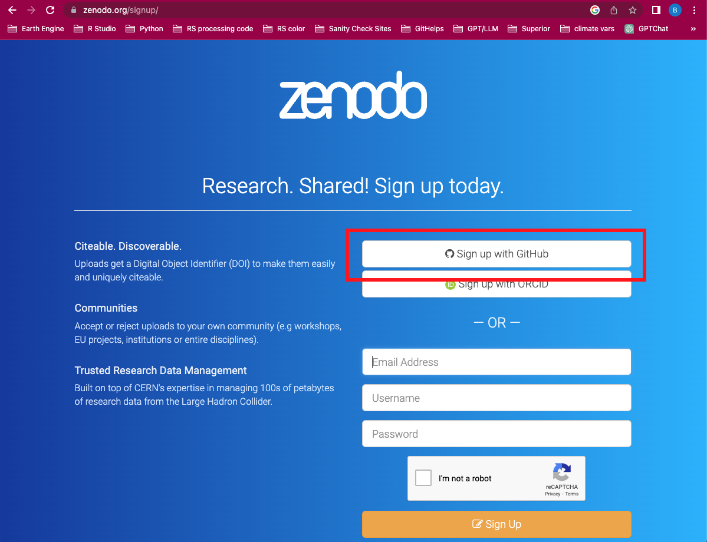
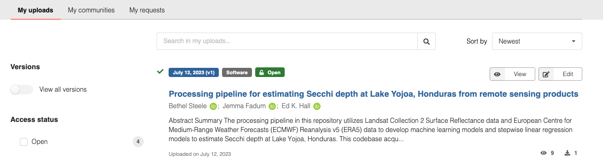
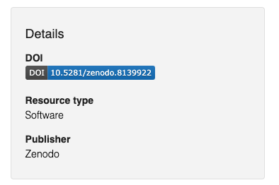

Section 8 Archiving Data and Code
We archive data and code through a number of pathways. Archiving our code and data make downstream analyses reproducible, is a great way to share data, and also provide the ability for citation through a stable DOI. Generally speaking, it’s good practice to get a DOI for any data before sharing it, as this helps with data provenance, additionally, most journals now require that all code and data are archived using a DOI. The flowchart below will guide you in the preferred method of archiving.

8.1 Choosing a data repository
The decision of which data repository to use is less straight forward. There are benefits and trade-offs to each. The Environmental Data Initiative (EDI) requires a significant amount of metadata in the form of an EML (ecological metadata language) file that describes the data and is the best for .csv files, however, this metadata makes the data more usable by downstream users. HydroShare features a less rigid metadata requirements, and is better suited for rasterized data and non-.csv file types. FigShare requires no metadata and because of that there are numerous data products with no metadata that are stored on FigShare.
Generally speaking, all data that is published from this lab should have thorough metadata regardless of the metadata requirements of the data repository chosen. For one-time uploads to EDI, you can use the ezEML interface of EDI to create and format your EML. If you plan to create many data packages, make an EDI account so that you can upload yourself. If you have a dataset that will be updated frequently, use of the R package {EMLassemblyline} is useful. If creating metadata for other data repositories, review the content of the EML and include as much of that information in your metadata as possible.
8.2 Publishing code to Zenodo
When delivering code or repositories to our stakeholders or other researchers, it needs to be citable. A citable repository has a stable DOI (digital object identifier) and complete metadata. We use the GitHub integration in Zenodo to publish repositories. When set up correctly, a GitHub ‘release’ will push all code to Zenodo automatically. All future ‘releases’ will be associated with the original DOI as well as a new DOI specific to that release.
In general, the GitHub -> Zenodo pathway is best for software (code) and not necessarily for data. Data publishing should be completed at EDI, CUAHSI, or FigShare. Derived data is okay in the GitHub -> Zenodo pathway, just remember, this pathway is meant to be for CODE and SOFTWARE, not necessarily for data (though you can publish data to Zenodo).
As mentioned before, we only publish repositories that have been consistently reviewed internally. Ideally your repository has been reviewed by an external collaborator or by another ROSSyndicate member. Remember, by pushing this repository to Zenodo, you are creating a PERMANENT archive of its contents, for better or worse.
8.2.1 Creating a Zenodo account
The easiest way to create a Zenodo account is to do so with your GitHub credentials. You will need to link these two accounts in order to fully take advantage of the GitHub/Zenodo integration.

8.2.2 Preparing to publish
In order to have a meaningful repository release, you need to provide some metadata to Zenodo. While there are no requirements for publishing to Zenodo, it is a best practice to include robust metadata alongside your code release. A metadata template can be found in the helpful_docs folder of this repository.
Once you’ve compiled this information, send it to Katie Willi or Anika Pyle for proofreading.
Release Title
You can use the repository name, but that’s not going to be helpful for anyone except you! Someone reading the Release Title should be able to discern what the repository does. You can explain the ‘how’ in the description.
Author list
Prepare your author list by looking at the contributors to the repo. All contributors to the repo should be listed as an author. You will need each author’s full name, institution, and their ORCID.
Description
This is the big lift in creating the metadata. Consider this similar to the introduction/background and methods section of a scientific paper. In the description of your repository, add information about the following things:
General code description - the ‘how’ of your repository
Methodology (summary only) - specifically if there are multiple steps to an analysis it is helpful to provide a methodology. If the repository hosts a very complicated analysis, consider only a condensed version of methods here, but add a markdown document with the complete methodology in your repository.
If you are including data:
data lineage (aka, where the data came from)
explanation of how the data have been manipulated if they are derived (this is related to methods, so use your best judgement).
If the analysis is specific to a certain locale, state and describe the locale.
Maintenance and maintenance interval. ‘Ongoing’ or ‘completed’. If ‘ongoing’, state the approximate interval that the repository will be updated.
If this is an update to a previous release, state the changes from the previous version.
Generally speaking, much of this information should already exist in your repository README or Methods document and cutting/pasting is absolutely okay. This section may be lengthy and that is okay!
Version
For one-time releases (like preparing a repository for a paper), using a version-number is perfect (i.e. v1, v2, etc). For repositories that are updated frequently, consider using a version-year-number (i.e. v2022-1, v2023-1, v2023-2, etc).
Keywords
Generally speaking, keywords help others find your code or research. It is not required. Keywords should be meaningful and specific and can include places, methods, etc. It is common to use controlled vocabulary for keywords, like the LTER controlled vocabulary for ecology research.
License
All repositories that are published are considered open access. Because our repository best practices include using an MIT use license, the LICENSE.txt file will override this option.
Funding
If there is applicable funding sources for this repository, you should list them. You will need the funder name and the grant number.
No other fields are required.
8.2.3 Linking a repository to Zenodo
To activate the GitHub/Zenodo integration for a given repository, navigate to the GitHub account page by clicking the dropdown menu in the top right of the window.

From here, you simply follow the directions!

8.2.4 Completing the metadata information
To complete the entry of your metadata information and formalize the publishing of your repository, you’ll need to edit the Zenodo upload. Do this by clicking on “My Dashboard”.
Here, you can click on the released repository:

And then click the ‘Edit’ button for the associated upload. Here, you can enter in all information from your Zenodo metadata document. When you’re ready, press ‘Save’ and then ‘Publish’.
8.2.5 Add the DOI badge to your repository
Now that you’ve minted a sweet sweet DOI for your repository, you should go ahead and add the DOI badge to your repository’s README file.
On the right hand side of your Zenodo release landing page (formatted as ‘https://zenodo.org/record/*DOInumber*’ on your browser), click on the DOI badge:

This will pop up a number of embedding formats. Copy and paste the one for ‘Markdown’. At this point, go to the GitHub repository and add the badge at the top of the primary README file within the GitHub user interface on the web. This addition to the repository does not need to be reviewed.
8.3 Philosophical and Ethical Considerations
As a general philosophy we acknowledge that there is bias in every data set and in the decisions we make along the way as we code. These biases may be geographical (data are only from one location), contextual (data are only from a single source), or implicit (data have been altered for a specific purpose). As you prepare your data and metadata, it is important to think about the biases we contribute to a given dataset.
To familiarize yourself with bias that we introduce into our data and analyses, here are some resources:
“Biases in lake water quality sampling and implications for macroscale research” [@stanley2019]
Review the questions in this datasheet created by our colleagues in the Atmospheric Sciences department when creating metadata and general documentation
A deep dive into bias in AI/ML: “Why we need to focus on developing ethical, responsible, and trustworthy artificial intelligence approaches for environmental science” [@mcgovern2022]